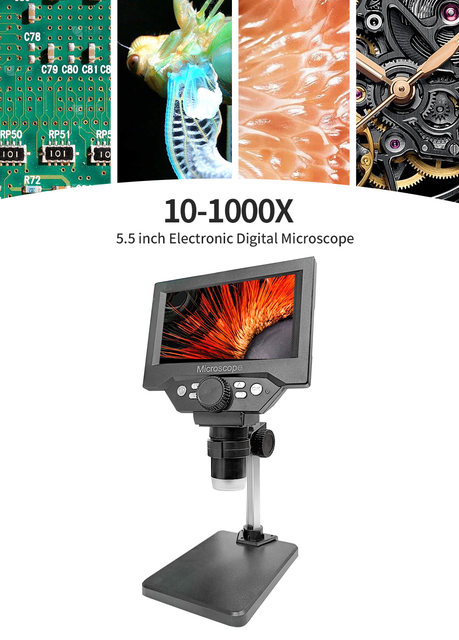
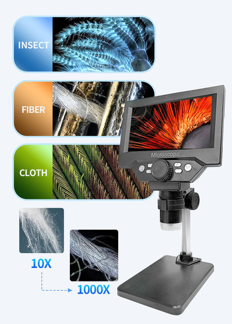
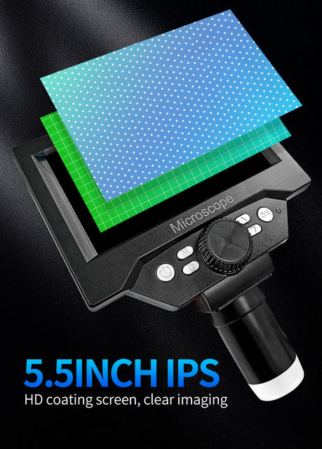
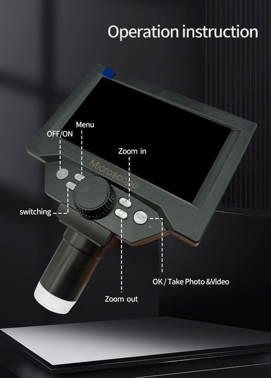
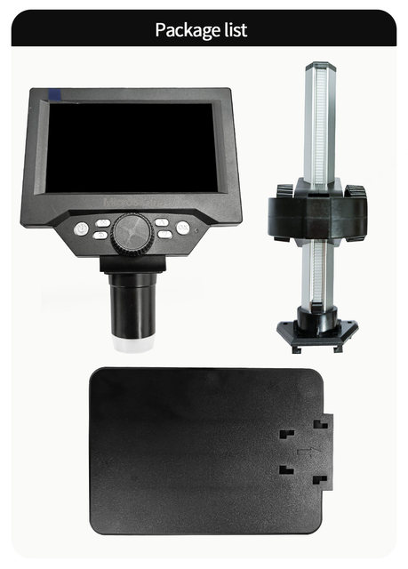
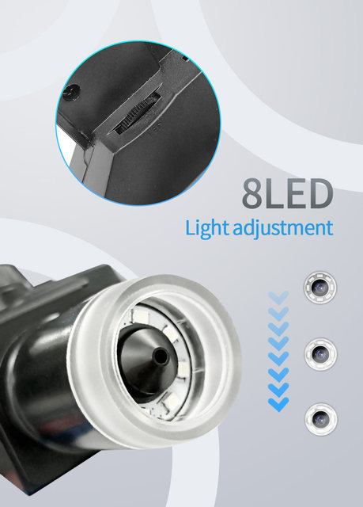
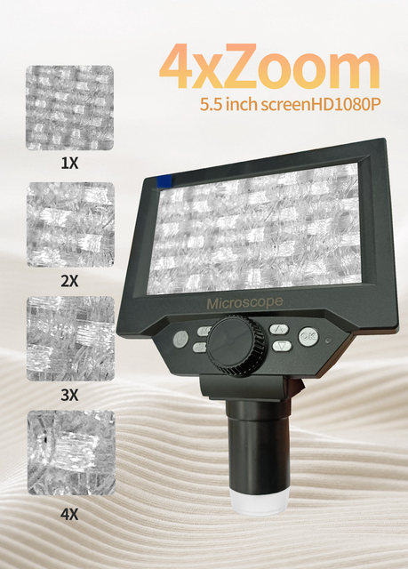

• High Magnification Ratio :With a magnification ratio of 500X - 1500X, this digital microscope provides clear and detailed images of your subjects.
• Digital Features :The digital features of this microscope make it easy to capture and view images, as well as to adjust the magnification and focus.
• Metal Material:Made of metal, this microscope is durable and sturdy, ensuring that it can withstand frequent use and rough handling.
• Monocular Drawtube :The monocular drawtube design of this microscope allows for easy and comfortable viewing, reducing eye strain and fatigue.
5.5 "LCD Digital Microscope 1000X 1080P Coin Microscope Magnifier with Stand Soldering Microscope for Electronics Repair
Main Feature
1 . ★【FHD 1080P Image Video】: The handheld microscope comes with premium camera chip of 1080P HD camera,amazing picture for your obeservation.The precision fine and coarse focusing brings specimens into focus quickly and sharply.
2 .★ [ Microscope-PC View] - Supports Windows connection so you can observe on a larger scale. you can serach for "amcap " for download or by this link download : http://106.14.252.86/index.html .
And this compatible with Mac OS. Make Sure your MacBook has " photo Booth " if doesn't please install it from App Store
3.★【5.5 inch LCD Display】: This digital microscope comes with 5.5 inch screen and 500X/1000X magnification, 8 adjustable LED lighting, which provides a bright field of view and is cool enough for use with various enviroment.
4.★【Wide Application】: The usb microscope can solve problems in at least 6 fields, such as coin collection,PCB,outdoor observation.And it has a durable base.
5.★【 A great gift ] : The mini handheld microscope is a useful and funny tool for students, engineers and others who love to explore the micro-world, a good choice for researching circuit board, coin, jewelry, insect, plant, and printing Inspection, reading did and etc .
Specifications
Material: plastic, metal
Pixel: 1080P
Magnification: 50X-1000x
Resolution: 1920x1080, 1280x960, 640x480
LED light: 8 LEDs
Focusing range: 3-40mm
Picture format: JPG
Video format: AVI
Working time: about 4H
Charging time: about 5H
Kindly Noted :
1. please turn off for charge !
2. This Microscope did not coming with TF Card , you need buy yourself !
3. Please kindly adjust 50X-1000X Magnification to get best clear for picture !






